obras / chalés
Chalé Acolher
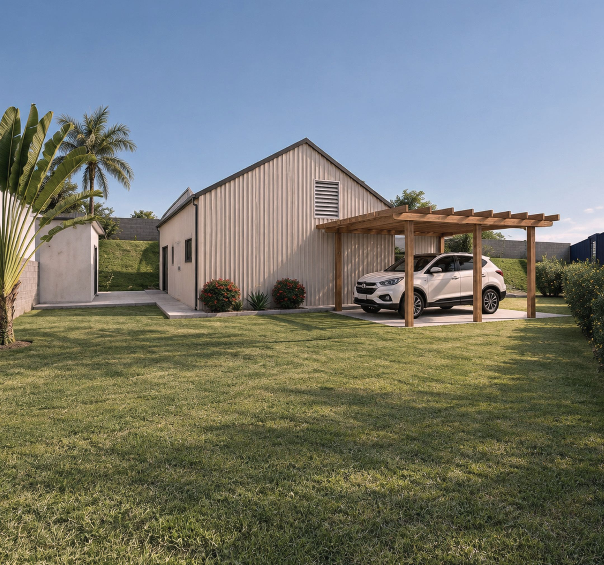
Chalé térreo com a mesma telha metálica creme nas paredes e no telhado.
A sala junta estar, jantar e cozinha em 33,54 m² e abre para os fundos por uma porta de correr de 3,00 m. Suíte com closet, um dormitório que também é escritório e lavanderia externa junto à divisa.
A estrutura é em light steel frame painelizado, com um só perfil em toda a obra: paredes em módulo de 0,40 m, tesouras alinhadas aos montantes e laje técnica em vigas treliçadas.
- Local
- Marília · SP
- Área construída
- 80,57 m²
- Projeção
- 7,10 × 10,65 m
- Sistema
- Light steel frame painelizado
- Perfil
- ME 90 #0,95, único em toda a estrutura
- Módulo
- Montantes a cada 0,40 m
- Fechamento
- Telha metálica trapezoidal RT 45 em parede e cobertura
- Vento de projeto
- V0 = 40 m/s, categoria III
- Escopo
- Arquitetura, estrutural em steel frame, complementares e caderno de montagem
- Etapa
- Projeto · 2026
Fachadas

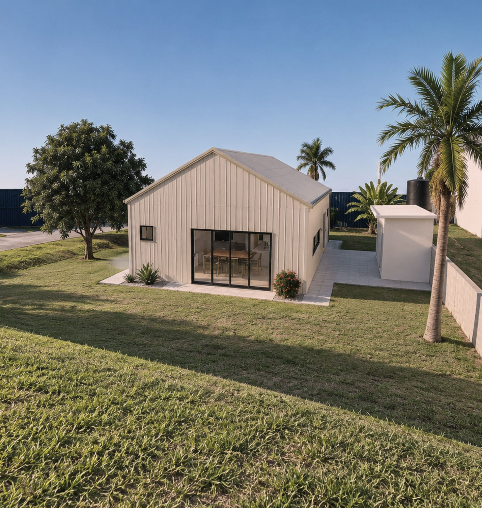

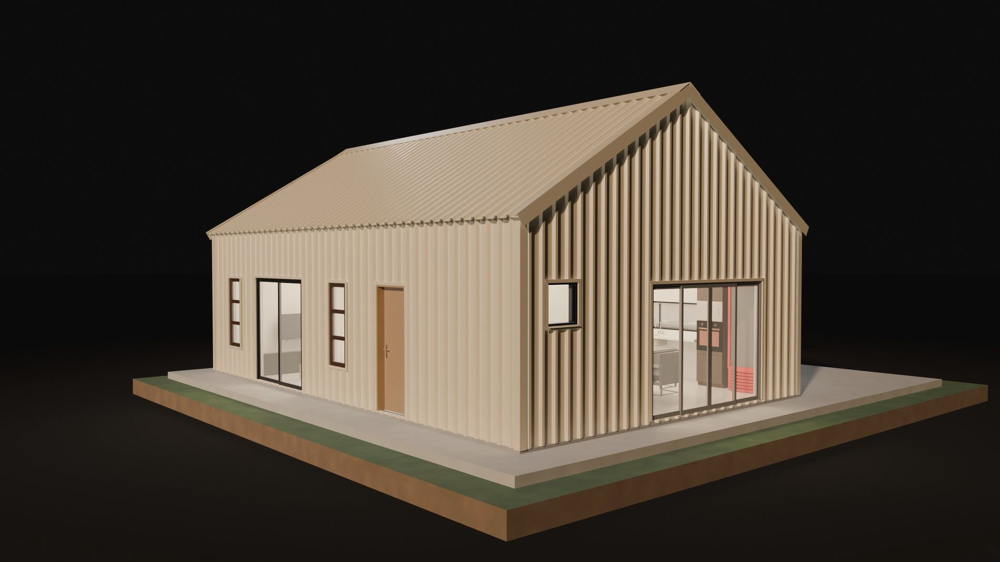
Interiores

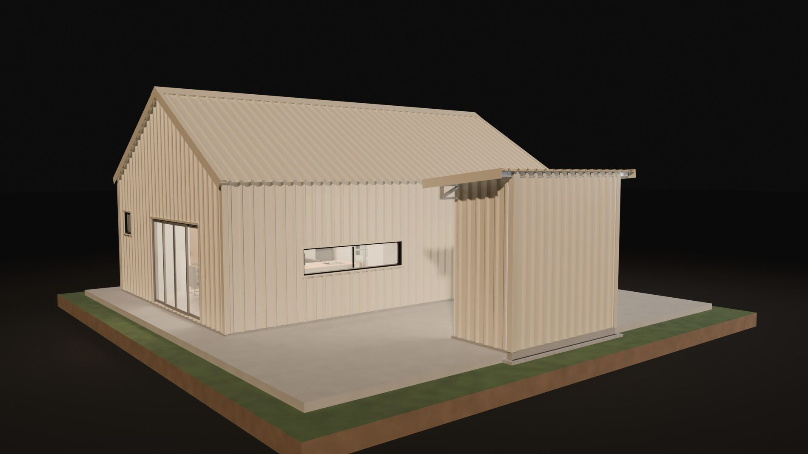

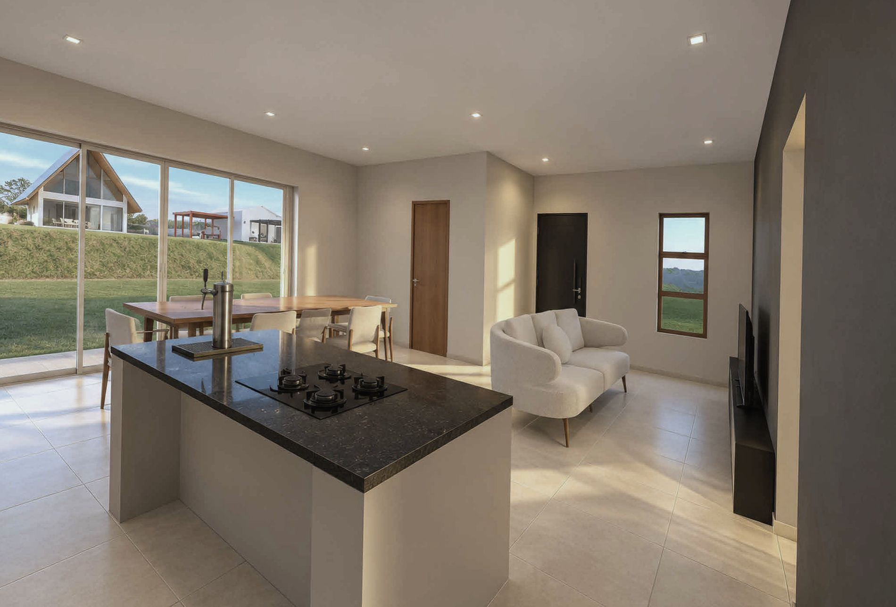

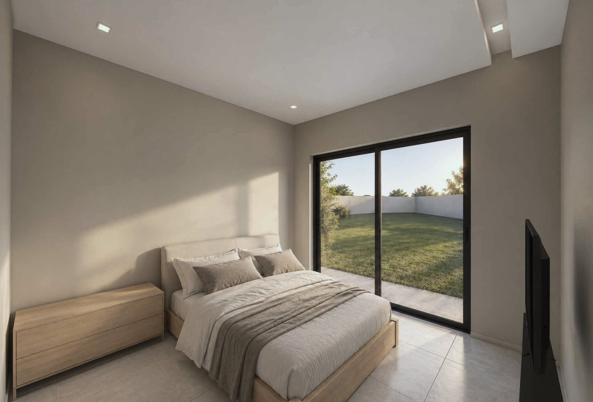

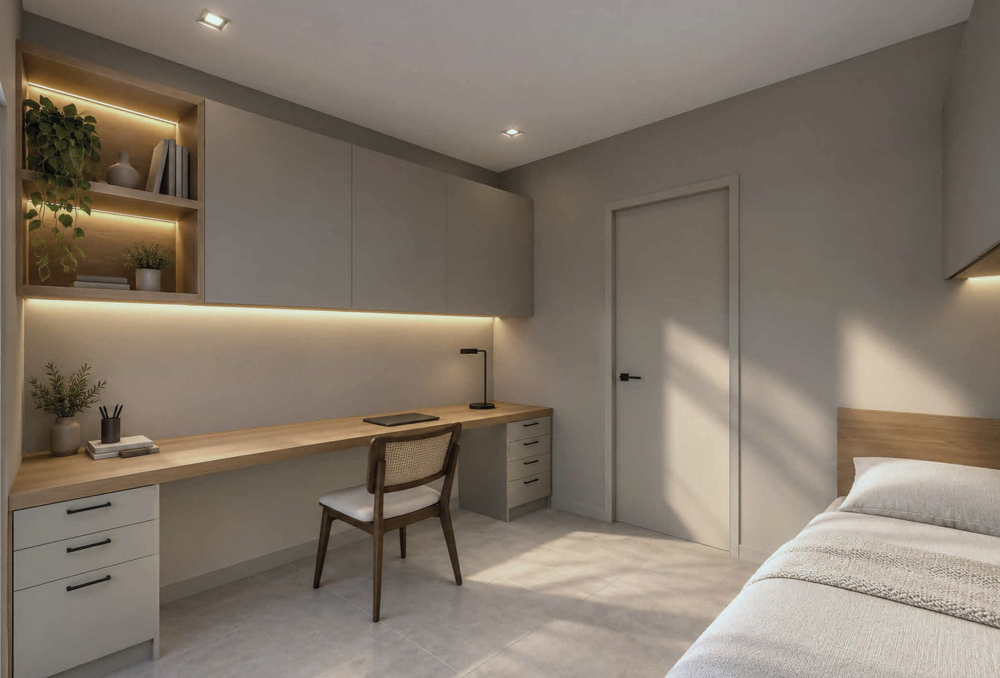

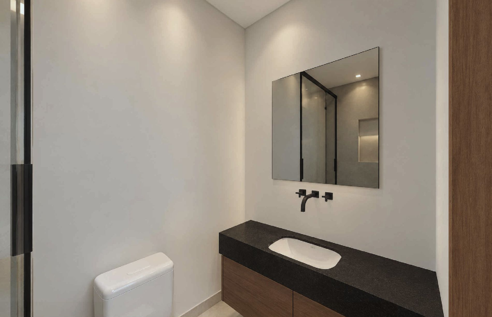
Layout

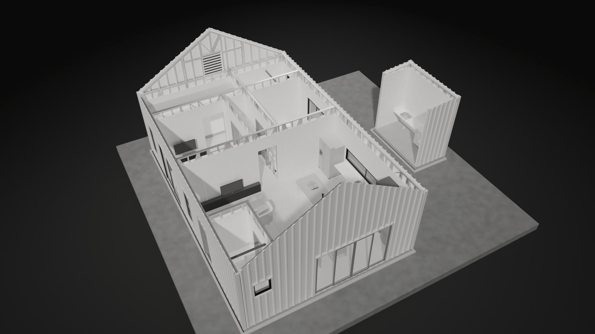

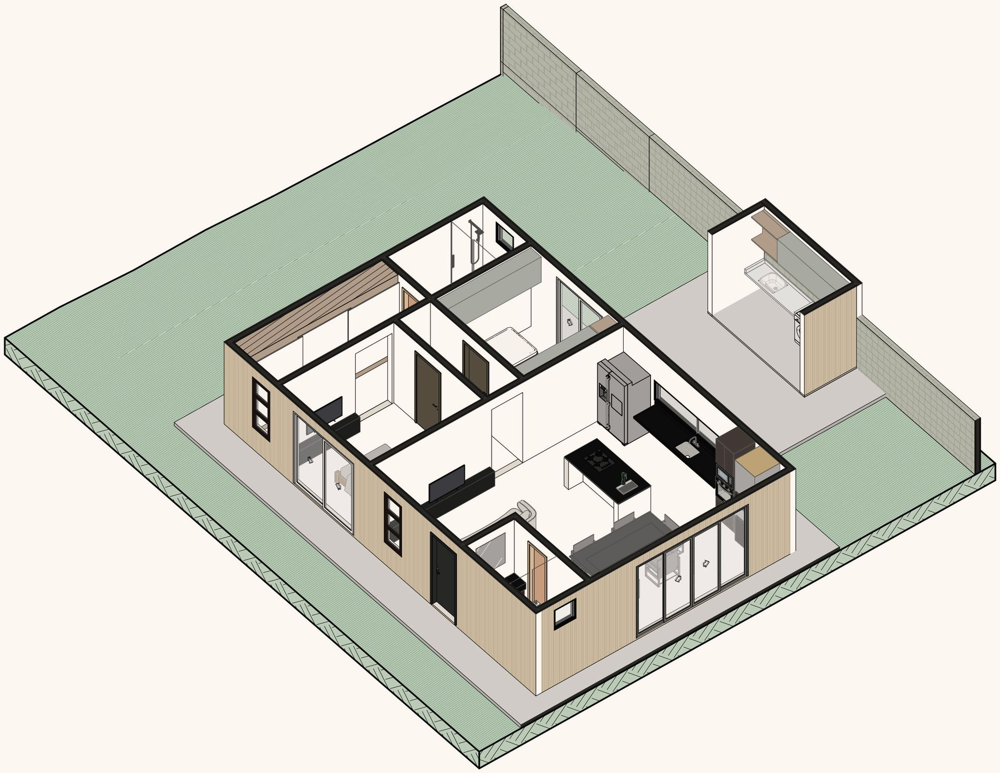
Estrutura

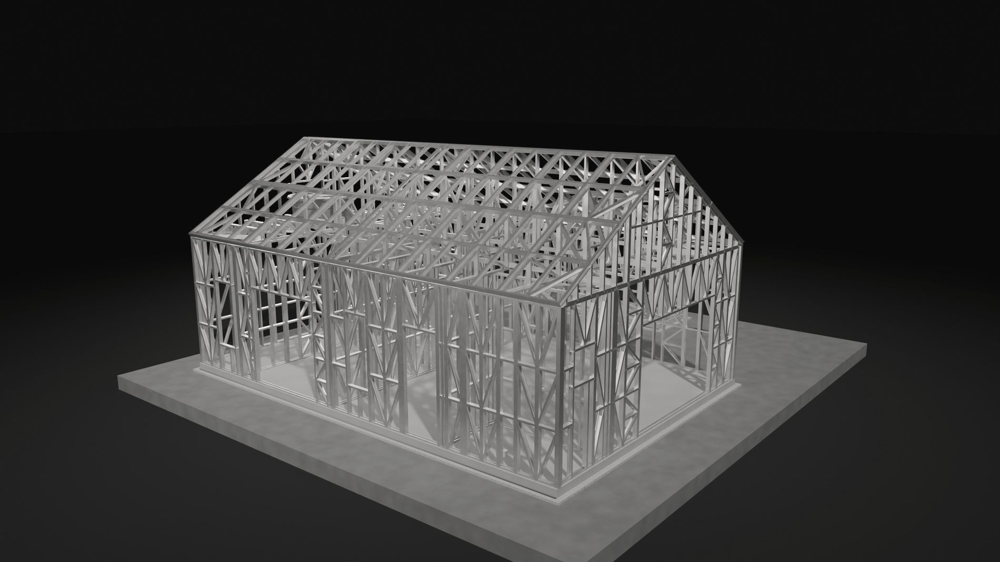

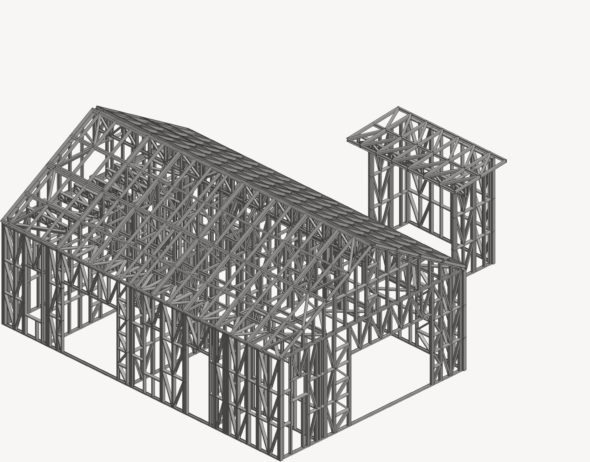

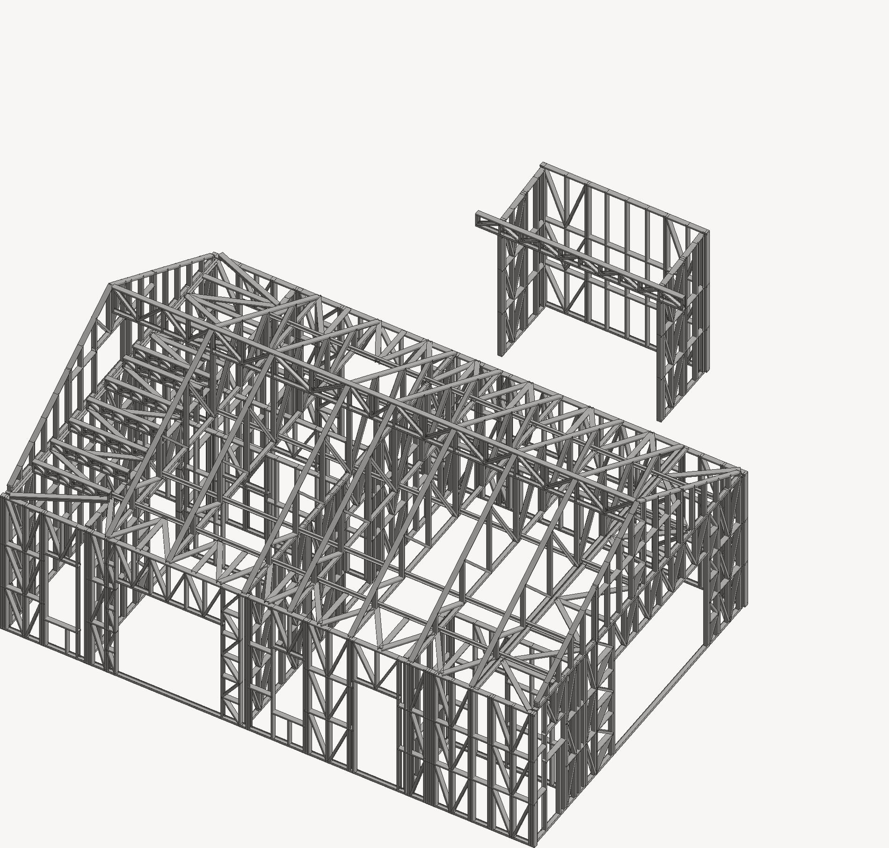